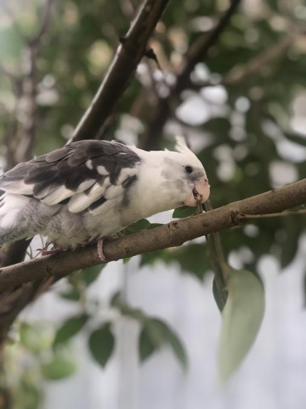
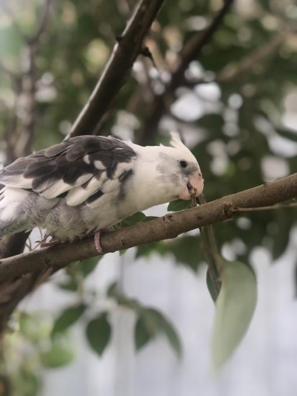
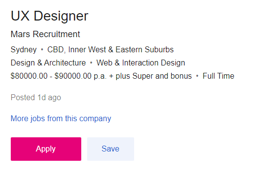
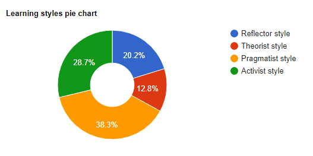
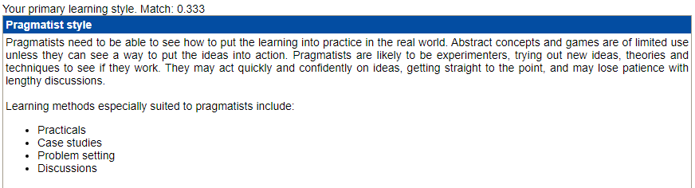
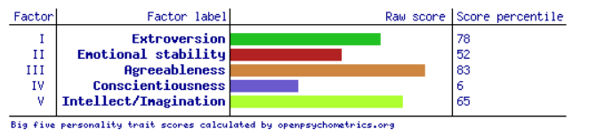

Margaret Xiao
ePortfolio
Personal Information
Hello, this is me. Welcome to my profile!

I was born in Australia and I am of Chinese ethnicity.
I'm bilingual, speaking both English and Chinese.
I have a pet cockatiel which I adore and her name is Jett. She's named after an agent in my favourite video game at the moment, Valorant.
This is Jett.
 

Interest in I.T.
My interests in I.T. sparked when I was struggling to find a career path I'd be happy to pursue along with my studies. I have had a passion for computer systems and gaming for a number of years now which would naturally steer me toward I.T. A good friend of mine was an inspiration to me as well. As his career progressed as a software engineer I was able to watch him grow into someone I'd like to be one day. Hardworking, smart and know 10 different types of code off by heart. What makes me more interested in this field is the evolving nature of it. Especially in the face of COVID-19, we can see how workers in the technology field are needed more than ever to facilitate virtual connection in a social distancing world.
My experience working in I.T. would extend only to working with databases. I have worked in a logistic and customer service role which has allowed me to work with many databases including loyalty memberships, product orders and courier tracking information.
I chose to come to RMIT because this institution specialises in information technology. I'm particular interested in user interface and user experience design. Studying here will equip students with the necessary knowledge and practical skills which will translate well when joining the workforce.
Ideal Job
Description
My Ideal Job for the future would be to become a UX Designer.

In this role as a UX designer for the Product team, you are responsible for delivering an enriching experience from start to finish both on web and mobile devices. The client is a Financial Technology (FinTech) company so the job would be involving creating a product which allows its customers to invest.The job will require user research to be conducted and mock site maps and prototypes to be drafted to deliver an optimal user interface for the final product.
This kind of position is appealing to me as I actively use many apps and websites in my day to day life. Namely for banking, investment and social media. As time has gone on I have noticed how UI and UX designers actively contribute to making a great product an enjoyable experience to interact with from start to finish. This includes smooth, logical flow of an apps interface or eliminating the number of clicks for example.
The value of these kinds of jobs continue to grow as consumers experience the effectiveness of it. A positive user experience can influence a consumers loyalty to a brand and its place in a competitive market. As this is inherently a collaborative role, with the need to consult with product managers and a team, this makes the job ideal as a future career pathway.
Skills I Need
The role looks for creative and flexible individuals. This position will require me to be proficient in many skillsets pertaining to user experience design. Proficiency in Figma and Jira will be required as well as experience building design systems with other softwares. These will be needed in the process of designing the Mobile app for andriod and iOS. Though not necessary, I believe having knowledge in Java, Swift and Objective-C coding languages will be useful as it allows you to have insight on the application development side of things.
Skills I Have
With respect to the key skills and experience listed in the job description, I believe I'm able to work effectively in a team. I've been exposed to the Figma tool as well as user testing in my Human Centered Design studies.
Learning Plan
While completing my Bachelors Degree, I'll need to make sure that I'm actively working to create a portfolio of personal projects to showcase my skills as well as learn some along the way. This should include UX/UI proposals for digital products with a Human Centered Design Approach as well as previously developed design systems.
Personality Profile
Myers Briggs Type Indicator [MBTI]
The MBTI test indicates that I am a Campaigner (ENFP) meaning I have an outgoing, openhearted, and open-minded personality.
These were my results:

Strengths and Weaknesses
The 16personalities website provides the full descriptions of the strengths and weaknesses of the Campaigner personaility type which you can view here.
I'll be providing my interpretation of the results as well as what they mean in relation to me personally.
Strengths
Campaigners have a great imagination and are open-minded. They aren't afraid to leave their comfort zones and try new things.
Campaigners value all people and their emotions and are able to notice when these change. They are often very perceptive of other's peoples needs and feelings and in this way their caring and considerate nature can be seen.
Campaigners are always open to hearing people's new or different ideas or opinions, even when it greatly contrasts with their own. In turn, with their imagination and new inspirations they are also eager to share their ideas with people as well.
Campaigners are both great at communicating as well as listening. This allows them to have conversations with almost everyone, even if those who are not very sociable or socially complicated.
These strengths incorporated all work to form a warm hearted and approachable friendly person. Campaigners are able to get along with almost everyone and have wide social circles.
Weaknesses
Campaigners can be unfocused, disorganised and restless.
New projects and collaborating can be exciting for Campaigners. However, as their interests change frequently, a person with this personality type may struggle to commit to something long-term.
Though Campaigners are very enthusiastic with projects they enjoy, this does not extend to projects they don't find particularly interesting. This causes them to be avoidant with practical and "boring" matters.
Campaigners can become overcommitted as they feel a need to attend to others when called for assistance or guidance. With this they may have too little time and energy to tackle the necessities of their own lives.
Team Composition
Campaigners thrive in a team environment. They work especially well as they are not only willing to listen to other people's viewpoints and suggestions, but are genuinely interested and excited to hear them.
In addition to this, they are also natural leaders. Communication skills allow them to handle the individual team member's challenges with empathy.
They enjoy seeing people succeed and make sure to give praise and credit where its due. As they are able to uplift other's, Campaigners are enjoyable to work with.
Learning Styles Quiz
The learning styles quiz reveals that my primary learning style is the Pragmatists learning style.


Big Five Personalities Test
These were my results:

Factor I - Extroversion
Scoring high on Factor I indicates that I have strong positive emotionality. Individuals who score high on Factor I are outgoing and social
Factor II - Emotional Stability
In this case, the test indicates I have moderate emotional stability.
Factor III - Agreeableness
This was the factor that I scored highest on this test. Scoring high on Factor III indicates an individual is friendly and optimistic.
Factor IV - Conscientiousness
Scoring the lowest in this factor, the test indicates that I lean toward impulsive and disorganised behaviour.
Factor V - Intellect/Imagination
The test indicates that I am open to experience as my second highest scoring factor.
Interpretation of Results
These tests provide an insight to characterising my personality type, both practically and socially. There is certainly a trend with these online tests. In general, the overarching theme of my character with respect to these tests suggests I am an open-minded enthusiastic individual. I am easy-going as well as a great communicator. This is highlighted in my strengths of having a Campaigner personality in the MBTI test, the Pragmatist Style as well as Factor I, Factor III and Factor V of the Big 5 test. These attributes as well as my creativity and imagination are my strong suits.
It also highlights where someone with my personality may lack. It is noted that I may lack in patience and perseverance with a single task. In addition, handling confrontation may not be easy for me, especially when I need to critique a team member. In a group setting its always important to be accountable for your own contribution as well as addressing others.
With these strong interpersonal skills, the nature of my behaviour in a team can be described as a facilitator. From my personal experience, I'm always keen to begin group discussions and get to know everyone's personal strengths in a working environment.
When forming a team, I believe my personality longs for team members that love discussion and collaboration. I thrive in an environment where there is a constant exchange of different opinions and suggestions as it allows my creativity and motivation to peak. Motivational work partners allow me to be more devoted and focused to the work at hand to create something I'm proud of.
Project Idea - Project INT
Overview
Project INT will be a social media application for gamers to create social circles with people that have the same interests as them or just another way for people to make new friends. Whether you're a veteran or you're new to video games it is a space for you meet people you wouldn't encounter in your daily life.
Motivation
Especially with the recent events of COVID-19 we can see that online presence has increased greatly. Gaming has been a way for people to socialise in lockdowns all over the world. Despite almost all industries currently affected negatively by the pandemic globally, the video game and eSports industry has been thriving. With social distancing measures put into place, playing video games offers engagement to those looking for social interaction. This new social media app, will provide a new way for people to meet new people, especially those who are too shy to do so in person, but do want to expand their social circles.
Description
Especially with the recent events of COVID-19 we can see that online presence has increased greatly. Gaming has been a way for people to socialise in lockdowns all over the world. Despite almost all industries currently affected negatively by the pandemic globally, the video game and eSports industry has been thriving. With social distancing measures put into place, playing video games offers engagement to those looking for social interaction. This new social media app, will provide a new way for people to meet new people, especially those who are too shy to do so in person, but do want to expand their social circles.
Tools and Technologies
The app will be available on Windows desktop as well as iOS and android devices so we will need the appropriate tools and technologies to develop it for these platforms. We could make use of Electron framework using web technologies to create this cross-platform app.
Skills Required
For this project, we'll be needing to cater to our target audience, people who play video games that would also like to make friends and share their content. Conducting user testing will be necessary to see what people would Understanding of UX/UI Design will be required to ensure fluid experience with the application. For the backend, coding skills will be required. Code languages, such as Python, HTML, Java, etc will be essential to create the back-end operating system for the program.
Outcome
If the project is successful, Project INT should provide a service that will allow for gamers of all types to come together and build communities. You can share content, promote, talk, video, stream, upload media with close friends and make new ones. If you are keen to make new friends to play games with and don't know where to begin, this service provides an avenue for this to take place.